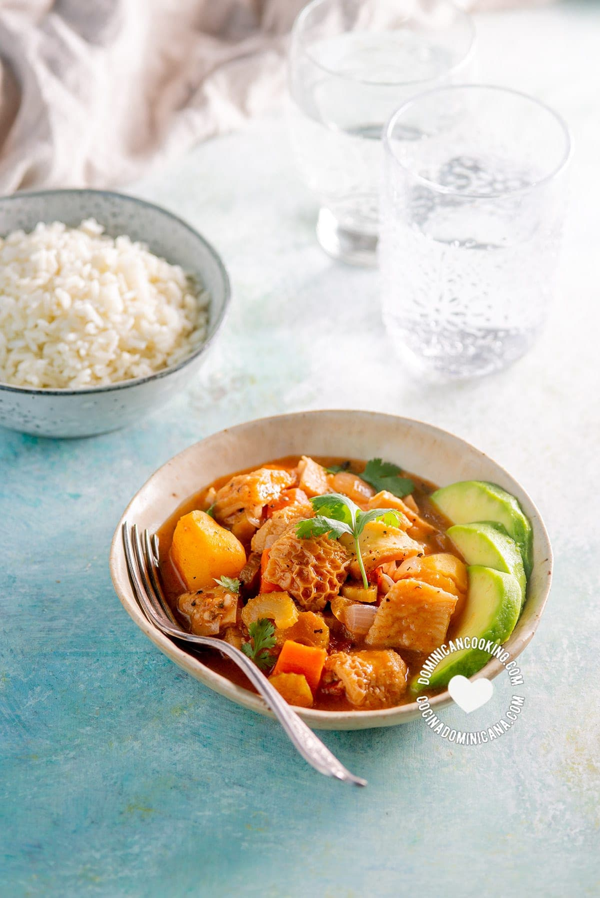

Mondongo Soup

Description:
Mondongo soup is a soup made of diced tripe cooked over low heat with vegetables such as peppers, onions, carrots, cabbage, celery, tomatoes, cilantro, garlic or root vegetables. The dish is usually prepared in former Spanish colonies in Latin America, the Caribbean, and the Philippines.
Ingredients:
- Beef Tripe/Mondongo
- Lime
- Baking Soda
- Pork
- Chorizos
- Tomatoes
- Scallions
- onions
- potatoes
- Yuca
- garlic
- Cumin
- Achiote
- salt
- Pepper Achiote
- Fresh cilantro/Parsley
Instructions:
- Wash the tripe with warm water and rub with lime juice. In a large pot combine the tripe, baking soda, and enough water to cover the tripe by 2 inches.
- Bring to a boil, reduce to a simmer and cook until the tripe is very tender, about 1 ½ to 2 hours or 45 minutes if using a pressure cooker. Drain the tripe and discard the water.
- In a large pot, place the cooked tripe, pork meat, chorizos, tomato, scallions, onion, garlic, cumin and achiote. Add enough water to cover.
- Bring to a boil, and then reduce the heat to low and simmer slowly. For about 45 minutes. Add the yuca, cilantro and potatoes. Cook for 30 minutes more.
- Ladle into bowls, and garnish with additional fresh cilantro and lime wedges. Serve with white rice, avocado, banana and hot sauce (ají) on the side.